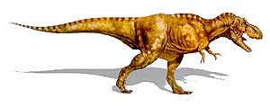

Los dinosaurios fueron una especie que pobló el planeta hace millones de años. Se trataba de reptiles prehistóricos de todos los tamaños, incluso gigantescos que poblaron el planeta tierra durante la denominada "Era Mesozoica". Al terminar esta era, tanto los dinosaurios como otro gran número de especies se extinguieron aunque todavía no se conocen con seguridad las causas, pero existen diversas hipótesis. Aunque mucha gente piensa que todos los dinosaurios convivieron en la misma época, lo cierto es que la Era Mesozoica se divide a su vez en tres períodos. En el Triásico, hace entre 254 y 204 millones de años sobre todo fueron dinosaurios herbívoros los que poblaban la tierra, en el Jurásico, hace entre 204 y 140 millones de años y en el Cretácico, hace entre 140 y 65 millones de años, un gran número de estos seres vivos fueron carnívoros, como el archiconocido Tyrannosaurus Rex.
Al contrario de lo que ocurre con el resto de reptiles,los dinosaurios eran un tipo de reptiles con características totalmente variadas y muy diferentes entre ellos. Mientras algunos dinosaurios eran bípedo y caminaban a dos patas, con unas patas superiores cortas a modo de garras, otros eran cuadrúpedos. Mientras algunos dinosaurios eran realmente lentos, enormes y excesivamente pesados, otros eran, aunque muy grandes, totalmente rápidos e incluso otras especies eran además pequeñas y totalmente ligeras, sirviéndose de su rapidez para poder capturar su alimento. Algunos utilizaban su velocidad para poder protegerse de los depredadores mientras otros lo hacían con su cuerpo, formado por unas estructuras muy gruesas y casi imposibles de atravesar. Existían dinosaurios con cuernos, con picos, con crestas, con huesos e incluso con plumas.
Aunque a día de hoy todavía no se conoce con seguridad qué pudo suceder para que los dinosaurios se extinguieran hace 65 millones de años, la teoría que cuenta con una mayor aceptación por parte de los estudiosos de esta especie extinta es la de que pudo ser un meteorito de un tamaño ingente, similar al de una montaña de gran tamaño, que probablemente pudo provenir de algún cometa o de un asteroidechocó de forma brutal contra la tierra en lo que actualmente se conoce como la Península de Yucatán, en el país de México.
Tras el impacto, se entiende que se abrió en que hoy día es el cráter submarino de Chicxulub, que cuenta con unos 200 km de diámetro. Este impacto, además de lograr acabar con toda una era de reinado en la tierra de estos reptiles, se calcula que también se llevó por delante al 70% de la vida terrestre. Después, las temperaturas subieron y muchos más seres vivos murieron también. Los que sobrevivieron, murieron a causa de los escombros y de los residuos que el impactó provocaron. Y si aún quedaban resquicios de vida, la temperatura descendió tras el calor insoportable hasta unos umbrales que hicieron imposible que ningún ser vivo continuara poblando la tierra.
Otros estudios indican que fueron un gran número de erupciones volcánicas las que provocaron el enfriamiento de la tierra, la lluvia ácida y la extinción de los dinosaurios.
Caracteristicas
Los dinosaurios eran unos animales que se diferenciaban de los reptiles que conocemos hoy día puesto que éstos caminaban con sus patas bajo sus caderas. No se arrastraban sino que caminaban, en su gran mayoría, de forma erecta. Estos seres vivos contaban además con un agujero en la zona de su cráneo ubicada entre las cuencas de los ojos y las fosas nasales, tenían vértebras sacras en la pelvis y sus extremidades estaban ubicadas bajo su cuerpo. Tenían también músculos en el húmero y en la mandíbula y estructuras fuertes en las caderas, rodillas y tobillos para poder moverse.
Por contra a lo que sucede con los reptiles actuales, diversas teorías e investigaciones sugieren que los dinosaurios no controlaban la temperatura de su cuerpo según el entorno, sino que utilizaban su propio metabolismo y es por ello que podían calificarse, al contrario que los reptiles, como animales con algo de sangre caliente. Los dinosaurios se dividen principalmente en dos grupos según la estructura de la pelvis. Unos la tienen como los reptiles y otros como las aves. También pueden dividirse según sus hábitos alimentarios en carnívoros o herbívoros, aunque también existían especies que consumían vegetales y diversos animales pequeños o según si caminaban a dos o a cuatro patas.
Algunos tipos de dinosaurios
| Arqueopterix | |
| Especie: Archaeopterix Lithographica Su nombre significa Ala Antigua. Esta ave primitiva vivió en el periodo Jurásico. Era un dinosaurio carnívoro. Su dieta probablemente incluía pequeños reptiles, mamíferos e insectos. Medía aproximadamente 60 centímetros y pesaba 500 gramos. Se le considera la primera ave. Es uno de los fósiles más importantes, porque aporta evidencias que apoyan la teoría de que las aves evolucionaron a partir de un antepasado que era dinosaurio. Los esqueletos fósiles de esta especie muestran que no eran tan buenos voladores como las aves actuales. Hasta la fecha se han encontrado ocho ejemplares en el sur de Alemania. |
|
| Ornitomimo | |
| Especie: Ornithomimus Velox Su nombre significa Rápido Imitador de Aves. Vivió durante el periodo Cretácico tardío. Esta especie era omnívora. Se alimentaba de plantas, insectos y hasta huevos de otros dinosaurios. Medía tres metros de largo y pesaba hasta 150 kilogramos. Se le asignó este nombre por su gran parecido a las aves modernas, como la avestruz. Sus restos fósiles han sido encontrados en Colorado y Montana, Estados Unidos, y Alberta, Canadá. |
|
| Velociraptor | |
| Especie: Velociraptor Mongoliensis Su nombre significa Rápido Cazador de Mongolia. Vivió durante el periodo Cretácico tardío. Medía hasta 1.8 metros de longitud y pesaba 15 kilogramos. Era carnívoro. Se cree que su presa favorita era el Protoceratops. Tenía el tamaño de un lobo actual y probablemente cazaba en grupo, lo que le permitía matar presas mucho más grandes que él. Al igual que Deinonicus, tenía una poderosa garra en sus patas, con la que hería de muerte a sus presas. Sus fósiles han sido encontrados en Mongolia y China. |

|
| Diplodocus | |
| Especie: Diplodocus Longus Su nombre significa Viga Doble. Vivió durante el periodo Jurásico tardío. La dieta de este herbívoro pudo haber incluido hojas y frutos de árboles altos y arbustos, así como helechos y equisetos que crecían a nivel del suelo. Medía hasta 27 metros de largo y se calcula que pesaba 20 toneladas. Los dientes de este dinosaurio se localizaban en la zona delantera de la mandíbula. Tenían forma de lápiz y estaban alineados de manera similar a los dientes de un peine. Diversos estudios sugieren que el Diplodocus no podía mantener su cuello levantado por mucho tiempo. El extremo de su cola era muy delgado, lo que le permitía usarla como un látigo para defenderse de sus depredadores. Se han encontrado restos fósiles un Utah, Colorado y Wyoming, Estados Unidos. |
|
| Tiranosaurio | |
| Especie: Tyrannosaurus Rex Su nombre significa Reptil Tirano. Vivió durante el periodo Cretácico tardío. Medía de 10 a 14 metros de longitud y pesaba entre cuatro y siete toneladas. Era uno de los carnívoros más feroces. Algunos huesos fósiles de Edmontosaurio y Triceratops muestran marcas de los dientes de este depredador. Las manos de Tiranosaurio eran tan cortas que no le servían para llevarse la comida al hocico. Se han encontrado fósiles en el oeste de América del Norte. Durante casi cien años se le consideró el carnívoro más grande, pero en América del Sur y África se han descubierto ejemplares de mayor tamaño, por ejemplo el Gigantosaurio. |
 | Braquiosaurio |
| Especie: Brachiosaurus Brancai Su nombre significa Reptil con Brazos de Branca. Vivió en el periodo Jurásico tardío. Este herbívoro estaba adaptado para alimentarse de diversas partes de árboles altos. Medía hasta 28 metros de alto y pesaba aproximadamente 50 toneladas. Era el único dinosaurio que tenía las patas delanteras más largas que las traseras. Se han encontrado fósiles en Colorado y Utah, Estados Unidos; Tanzania, y Portugal. |

| Espinosaurio |
| Especie: Spinosaurus Aegyptiacus Su nombre significa Reptil Espinoso de Egipto. Vivió durante el periodo Cretácico temprano. El Espinosaurio medía hasta 15 metros de largo y pesaba cuatro toneladas. Quizá la dieta de este carnívoro incluía pescado y otros dinosaurios. A la fecha no se han encontrado restos de comida en ningún fósil. Se cree que su enorme cresta absorbía y dispersaba el calor. Así regulaba su temperatura corporal. Tal vez también le era útil para el cortejo. Los fósiles de este dinosaurio han sido encontrados en Egipto, Túnez y Marruecos. |

|